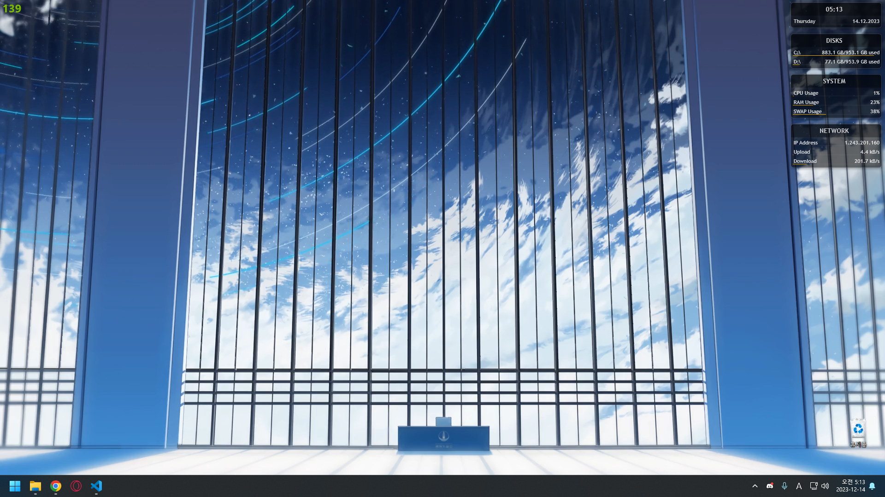
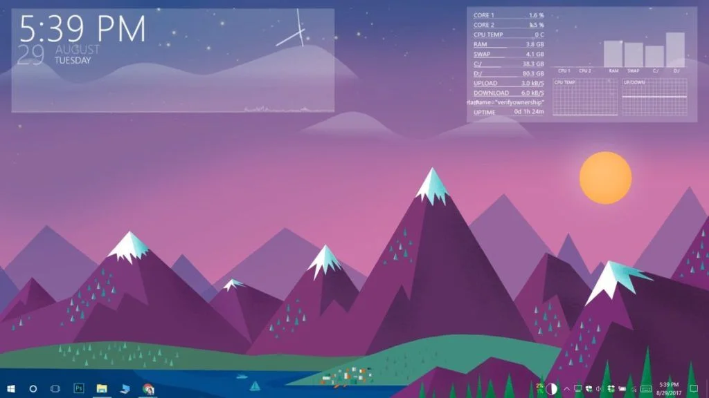

Rainmeter
- PC background GUI customizing program
Rainmeter는 다양한 정보를 GUI로 커스텀해 볼 수 있게 하는 프로그램입니다.
CPU, 메모리, 저장공간, 네트워크, 배터리 잔량, 시스템 온도 등 PC 내부의 정보는 물론이고
날씨, 달력, 세계시간 등 다양한 정보를 한눈에, 그것도 자유롭게 커스텀해서 배경화면에 표시할 수 있습니다.
심지어 기본적으로 제공하는 정보들은 PC의 리소스를 크게 잡아먹지 않기 때문에 사용에 부담도 없습니다.

*현재 사용중인, 기본적으로 제공하는 기능만을 사용한 예시.

*인터넷에서 찾은 커스텀 예시. 그래프 등으로도 표현이 가능하다.
직접 만들기에는 부담스러운 경우, 인터넷에서 찾아보면 사람들이 배포하고 있는 디자인들이 있기 때문에
이를 다운로드 받은뒤 간단한 조작을 통해 원하는 곳에 수정이 가능합니다.
아래 사이트에서 다운로드가 가능합니다.
Official Rainmeter Site